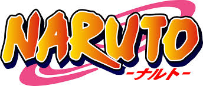
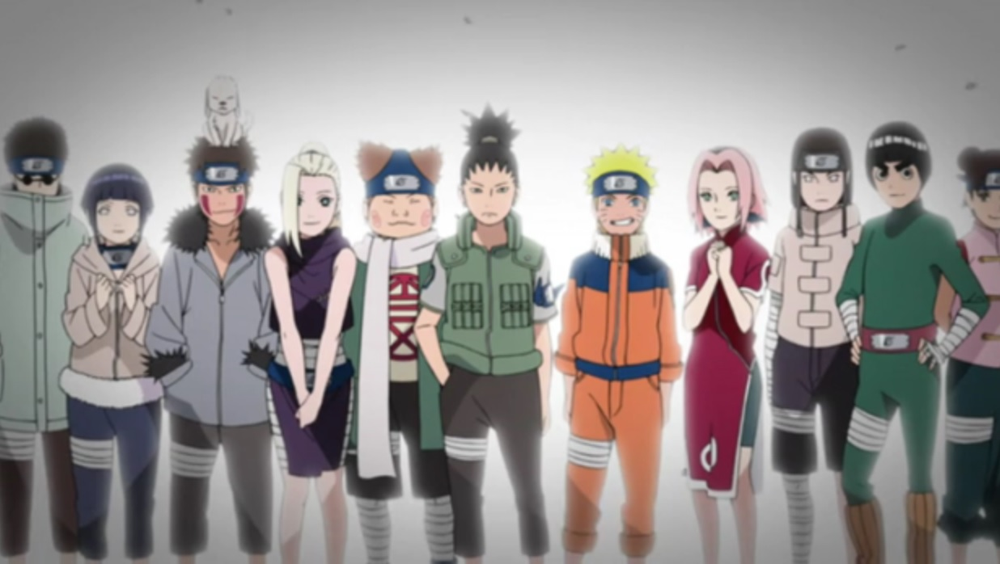

TRABALHO DE MATEMATICA 2:

é uma série de mangá escrita e ilustrada por Masashi Kishimoto,
que conta a história de Naruto Uzumaki, um jovem ninja
que constantemente procura por reconhecimento e sonha em se tornar Hokage
, o ninja líder de sua vila.
A história é dividida em duas partes,
a primeira parte se passa nos anos da pré-adolescência de Naruto,
e a segunda parte se passa em sua adolescência. A série é baseada em dois mangás
one-shots de Kishimoto: Karakuri (1995), e que por causa dele Kishimoto
ganhou uma menção honrosa no prêmio Hop Step da Shueisha no ano seguinte, e Naruto (1997). A editora Panini Comics licenciou e publicou o mangá em três versões no Brasil, e em Portugal é a editora Devir Manga quem licencia e publica o mangá. A
história de Naruto continua com o seu filho,
Boruto Uzumaki em Boruto: Naruto Next Generations.
